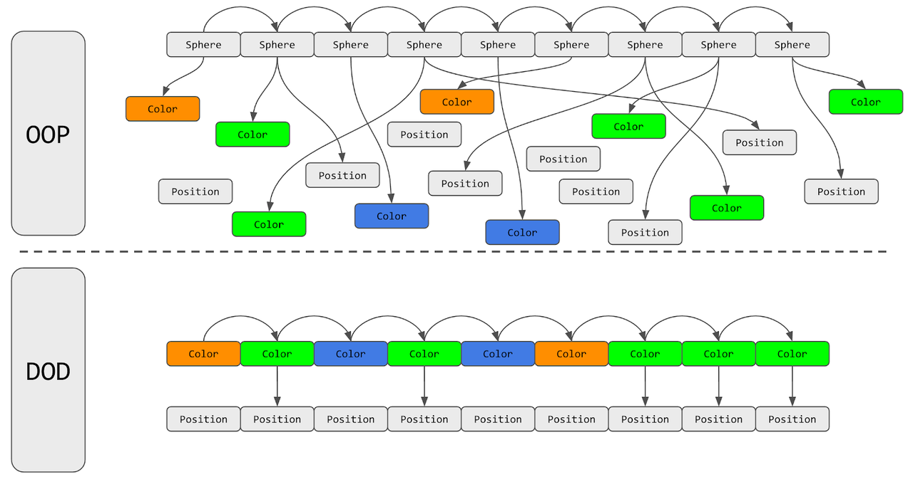

Andmetöötluses on andmetele orienteeritud disain programmide optimeerimise lähenemisviis,
mis on ajendatud protsessori vahemälu tõhusast kasutamisest, mida sageli kasutatakse videomängude arendamisel.
Lähenemisviis on keskenduda andmete paigutusele, eraldada ja sorteerida väljad vastavalt
vajadusele ning mõelda andmete teisendustele.
Paralleelne massiiv (või massiivide struktuur) on andmetele orienteeritud disaini peamine näide.
See vastandub objektorienteeritud disainidele tüüpiliste struktuuride massiiviga.
Need hõlmavad mitme massiivi kasutamist seotud andmete salvestamiseks, kus sama indeksi
vastavad elemendid erinevates massiivides on loogiliselt seotud.

| Head | Halvad |
|---|---|
| Parem jõudlus: Data-oriented design võib viia kiiremate ja tõhusamate programmideni, vähendades andmete liikumist ja optimeerides vahemälu. |
Nõuab teistsugust mõtteviisi: Data-oriented design nõuab tarkvaraarenduse osas teistsugust mõtteviisi kui muud lähenemisviisid, näiteks objektorienteeritud disain. See võib olla väljakutse arendajatele, kes on harjunud mõtlema objektide ja meetodite alusel. |
| Lihtsustatud kood: Data-oriented design võib muuta koodi hõlpsamini mõistetavaks ja hooldatavaks, kuna see eraldab andmed toimingutest ja soodustab kohustuste selget eraldamist. See võib hõlbustada programmi funktsioonide lisamist või muutmist. |
Võib nõuda varasemat planeerimist: andmetele orienteeritud disain nõuab sageli rohkem varasemat planeerimist ja kavandamist kui muud lähenemisviisid, kuna andmete korraldamine võib jõudlust oluliselt mõjutada. |
| Parem paindlikkus: Data-oriented design võib hõlbustada programmi funktsioonide lisamist või muutmist, kuna see eraldab andmed konkreetsetest toimingutest. See võib võimaldada programmi kasutamisel suuremat paindlikkust ja hõlbustada muutuvate nõuetega kohanemist. |
Võib olla vähem intuitiivne: andmetele orienteeritud disain võib mõne arendaja jaoks olla vähem intuitiivne, kuna see nõuab andmete ja toimingute abstraktsemat mõtlemist. See võib raskendada selles stiilis kirjutatud koodi mõistmist ja silumist. |